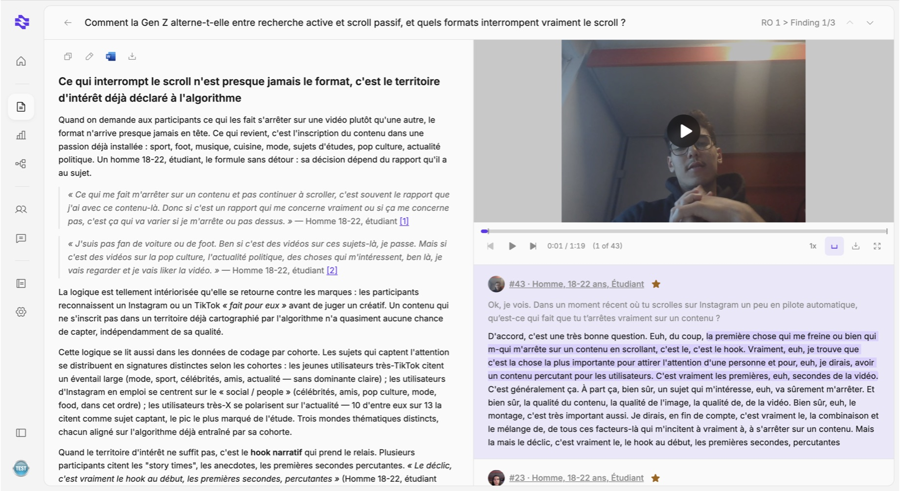
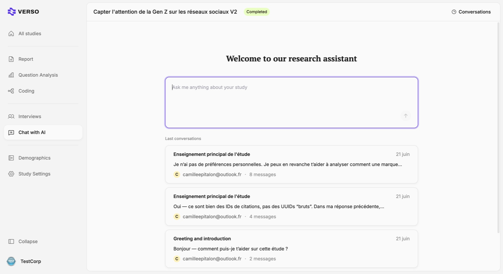

Verso
Founding Designer building the consumer OS for the age of AI: one place to run studies, group them, and find what your customers really think.
One product, two surfaces.
Verso is B2B2C. On one side, panel participants answer a mobile AI interview. On the other, managers and insights teams explore the results in a SaaS platform. Two audiences, two experiences, one product.
The craft was making each side feel right: a human interview for participants, and evidence they can trust for the teams reading the report.
An AI that interviews like the best researcher.
That meant working the prompt, but mostly understanding what makes a good interview. It's the product in the video above.
An insights platform built on evidence.
The biggest part of Verso was client-facing. For managers and insights teams, I designed a platform that matches how insights work: every claim backed by evidence. That meant an interface dense with text, kept readable and accessible.
I put media at the heart, audio and video of real participants, to keep the human present, and worked the report structure and layout so it feels rich but stays clean.



Ask across studies, get a sourced answer.
Last year I worked on the consumer OS, with chat as an integral part of the experience. People ask questions across one or several studies. The challenge: give back an answer that stays as clear as possible, and as sourced and scientific as the research behind it.


A design system LLMs can read.
One system across both surfaces, mobile and web. I built it to be readable by LLMs, so I can design directly in production, with prototyping plugged straight into Verso's design system. Setting up that process changed how the team ships.
Interviews run through Verso, across around fifteen studies for major CAC 40 clients, from telecom and banking to luxury and health.
Alongside, an AI-native design process now part of how the team ships.
Visit askverso.ai ↗